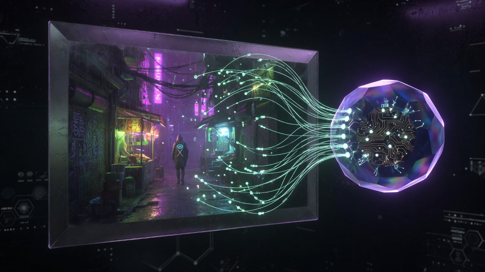

I write graphics and GPU systems: a solo Vulkan engine (path tracing, DLSS, ReSTIR), CUDA / Taichi physics, and a Godot MCP so agents can drive the editor. Thesis was neural rendering data and metrics — I didn’t build the camera rigs.
Remote · open to relocate Available full-timeEN fluent · 中文 native · FR basic
Built CamMatrixCapture: a 12-camera synchronized capture system with staggered trigger firmware, Bluetooth-controlled turntable automation, and a state-machine driven capture workflow. Indoor object captures feed NeRF / 3DGS training; outdoor work includes drone reconstruction of Gränsö Castle.
Released a 209 GB public dataset (31 GB compressed) focused on challenging materials — reflective, transparent, translucent. 14 objects, 432 images each (12 cams × 36 poses). MIT licensed.
Benchmark: 3D Gaussian Splatting ~11 dB PSNR above NeRF on reflective surfaces.
MSc Computer Science, Linköping University — Graphics & Visualization.
Open to graphics / engine / GPU / AI-infrastructure / agent roles · full-time.
Ships hardware RT pipelines (Vulkan KHR, CUDA), real-time path tracing with NVIDIA DLSS 4 Ray Reconstruction and SVGF, MIS path tracing with Owen-scrambled Sobol, OIDN / NRD denoisers. Also: synchronized multi-camera capture, Freedo internship (MLS-MPM on 3DGS), and open-source Godot MCP (OhaoTech) — 182 tools across 12 domains with a playtest evidence contract.
Projects
No projects in this filter.

NIUA Godot MCP · open source
Node / TypeScript · MCP · Godot 4.6 GDExtension
From-scratch MCP server plus a bundled Godot editor addon that lets AI agents create, inspect, run, debug, and export Godot 4.6 games through tools — 182 tools across 12 domains (scene, nodes, scripts, run, resources, debug, systems, workflows…), an editor bridge over local HTTP with token auth, and a run_playtest_evidence contract (input → assert → screenshot) so the agent checks its own work. Installers for Claude / Cursor / Codex.
TypeScript · React Ink · ReAct · Workflow Engine · in dev
Autonomous multi-agent framework for the terminal. Clean layered architecture (core / application / infrastructure / presentation), an AgentCoordinator for multi-agent orchestration, a workflow engine with plan validation, plus plugin manager, metrics, and background-task manager. ReAct loops with tool registration / execution; GitHub Copilot's OpenAI-compatible API as the LLM backend. ~30K LOC.
Series of fluid–structure sims on Taichi (Hu et al. 2018 MLS-MPM). Showcase clip: Phase 9 3D Rising Flood — 128³ grid, up to 4M water particles, GLB building → SDF slip boundaries, two-phase injection, PLY → SplashSurf isosurface → Blender Cycles water. Also: 2D dam break, 3D bridge pillars, water wheel, city flood, building fracture (Phase 8).
CUDA path tracer with BVH, Schlick-Fresnel refraction, and optional Intel OIDN denoising. 16 parameterized liquid presets (ocean · honey · lava · milk · blood · crystal …) each with their own IOR and depth-absorption. Paired with a Taichi-GPU Position-Based Dynamics cloth solver — stretch + bend constraints, material-specific stiffness — exporting per-frame OBJ meshes back to the CUDA renderer. 58 production stills shipped.
GPU-accelerated Smoothed Particle Hydrodynamics solver with Marching Cubes surface extraction and CUDA ↔ OpenGL interop for real-time visualization. Uniform-grid spatial hashing for neighbor search, cubic-spline density kernel with gradient / Laplacian variants for pressure and viscosity forces, plus surface-tension kernel. Bachelor thesis — the foundation my current fluid work builds on.
Compute-shader playground for procedural material decay on a PBR sphere — noise-driven rust progression (0/25/50/75/100%), paint cracking and peel, and a dynamic puddle / weather system that wets and dries the ground in real time. Built around an OpenGL compute pipeline with full BRDF response so albedo and roughness shift together as the surface ages. Coursework for Linköping's TNM084 Procedural Methods.
Reinforcement-learning agent for Chinese Chess — full Xiàngqí rules engine in C++/Qt, a Deep Q-Network with experience replay and a target network, and CUDA-accelerated training driven by self-play in the spirit of AlphaZero. Win-rate sweeps against random and self-play opponents, plus a playable GUI to face the agent. TNM114 group project at Linköping with Oskar Tengvall.
Two global-illumination renderers written from scratch for TNCG15. Monte Carlo path tracer with a CUDA backend for per-pixel parallel ray generation and progressive accumulation — real-time-feasible against the CPU baseline. Photon-mapping pass scatters photons from light sources, then estimates radiance via KD-tree nearest-neighbour lookup for sharp caustics and indirect lighting. Comparative study of where each technique wins.
Pipeline for classifying skiing techniques from video — OpenPose extracts 2D body keypoints, a Python preprocessor stitches per-frame skeletons into spatial-temporal graphs, and an ST-GCN trains on those graphs to label actions like big-bend carving. Best model (epoch 39, lr 0.1, batch 32) hits 50% Top-1 / 90.9% Top-5. Co-authored, published in Intelligent Computer and Applications Vol. 12 No. 4, April 2022.
Built a GPU physics system coupling an MLS-MPM solver to 3D Gaussian Splatting on a multi-GPU A100 server — a static scanned scene can deform, fracture, and flow in real time. ~2.25× end-to-end speedup via CUDA-graph capture and mass-conserving particle reduction.
Wrote the simulation-and-render pipeline in Taichi, NVIDIA Warp, and CUDA; productized it as a FastAPI + React workbench with streaming splat playback.
Independent AI Creative Platform (NDA)
Founding Engineer · Part-time
2025 — Present
Generative-media platform for creative tooling — GPU-backed image / video generation jobs orchestrated through an async queue with retry, prioritization, and tenant-isolated quotas.
Built the full vertical: TypeScript frontend, Python / Node backend, Postgres data layer, object storage, OAuth, billing integration, and a deployment / monitoring story. Reads as full-stack — anchored in the GPU work that pays the bills.
Beijing Guoyao Xintiandi Information Technology
C++ Development Engineer Intern · Beijing
Aug 2022 — Sep 2022
Rewrote rendering pipeline from legacy OpenGL to modern OpenGL for a Qt-based 3D medical visualization tool — shader programs, VBOs, modern state management.
Built a custom C++ network protocol layer for data transmission between client and backend.
I care about infrastructure, not app surface area. The systems I find interesting are the ones other engineers build on top of: a renderer, a capture pipeline, a physics engine, a GPU scheduler. I profile before optimizing, I read the paper before reimplementing, and I'd rather ship one well-understood 75K-line engine than three shallow demos.
Education
Linköping University
MSc Computer Science — Graphics & Visualization
2023 — 2025
Graduated February 2026.
Top grades (5/5) in Advanced Global Illumination, Modelling & Animation, Computer Games Design, Large Distributed Projects.
Thesis: Neural Rendering Dataset Collection (see Featured Work above).
Beijing Information Science and Technology University
BEng Computer Science
2018 — 2023
GPA 3.53 · Advanced Mathematics 97 · CPU Design 91.
 Helmet · deferred PBR
Helmet · deferred PBR
 Lantern · emissive
Lantern · emissive
 Spheres · BRDF
Spheres · BRDF
 16 spp · raw
16 spp · raw
 16 spp · OIDN
16 spp · OIDN
 ReSTIR GI · on
ReSTIR GI · on